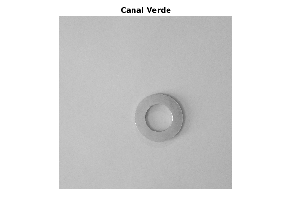
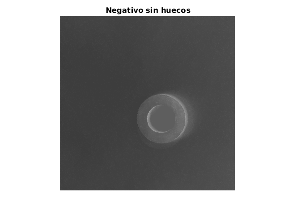
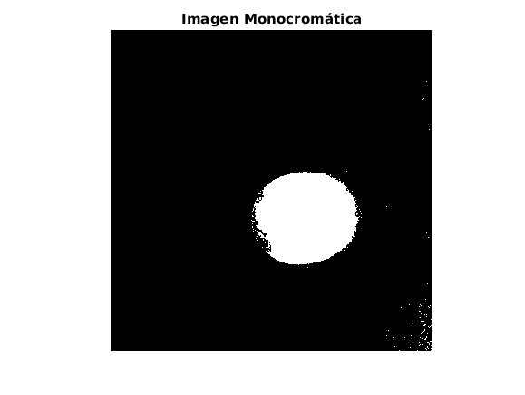
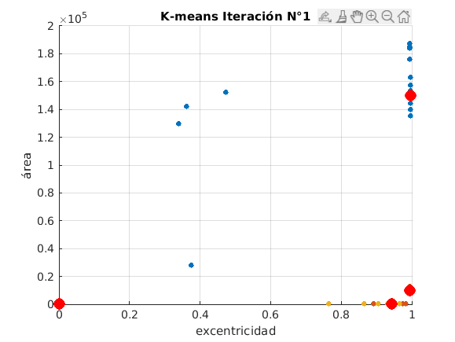
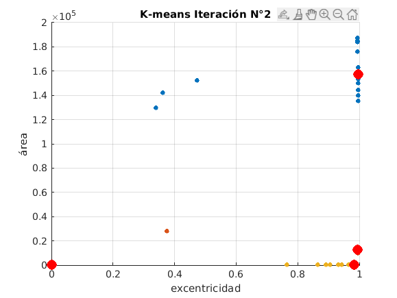
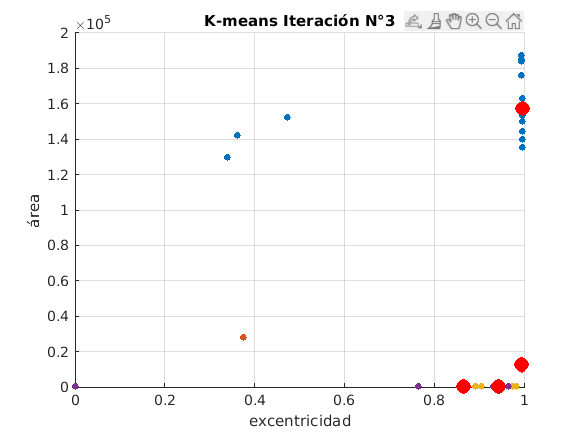
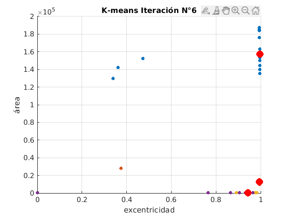

Contents
%%%%%%%%%%%%%%%%%%%%%%%%%%%%%%%%%%%%%%%%%%%%%%%%%%%%%%%%%%%%%%%%%%%%%%%%%%
"Trabajo Final Inteligencia Artificial I – año 2019" %
Marcelo E Mellimaci (Leg 10764) % % Sistema de clasificación de piezas metálicas por visión artificial % Agente que permite identificar tornillos, clavos, tuercas y arandelas % Toma imágenes de las 4 categorías por separado como una base de datos % Se usan los métodos K-means y K-nn para realizar la clasificación %
%%%%%%%%%%%%%%%%%%%%%%%%%%%%%%%%%%%%%%%%%%%%%%%%%%%%%%%%%%%%%%%%%%%%%%%%%% % Antes de correr el script se eliminan variables globales y se % limpia la pantalla clc, clear, close all; % Directorio dónde se encuentran las imágenes '.jpg' de base de datos ruta_dataset= uigetdir("", 'Elija el directorio de las fotos del dataset:'); cd(ruta_dataset); DataSet= imageDatastore(ruta_dataset, 'FileExtensions', {'.jpg'}); N= length(dir('*.jpg')); % Se va al directorio del proyecto para leer los fuentes de las funciones cd('/MATLAB Drive/MMellimaci/Proyecto_IA_1/'); % Se extraen características del dataset y se almacenan en dos arrays [dataBase, categoria]= cargar_dataset(DataSet, N); % Se muestra el diagrama de las características de las fotos del dataset figure; plot(dataBase(1,:), dataBase(2,:), '.', 'MarkerSize', 17); xlabel('excentricidad'); ylabel('área'); title("Gráfico de dispersión del dataset"); % Carga la fotografía de la pieza a clasificar [FileName,PathName] = uigetfile('*.jpg','Elija la foto de la pieza a clasificar:'); imagen= imread(strcat(PathName,FileName)); caracts_foto= cargar_foto_a_identificar(imagen); % Muestra las características extratídas de la imagen a reconocer: % el área y la excentricidad de la forma redondeada disp('Excentricidad y Área de la imagen clasificada:'); disp(caracts_foto'); % Se agrupa en 4 grupos el dataBase con las características de las fotos tic; % answer= inputdlg({'Ingrese el nro de iteraciones del método K-means:'}, ... % 'Número de iteracs para K-means:', [1 40], {'7'}); % iteraciones = str2double(answer{1}); iteraciones= 8 agrupar_con_kmeans(dataBase, N, 4, iteraciones); disp("Tiempo de ejecución del algoritmo K-means:"); disp(toc); % Se identifica la categoría de la foto a clasificar a través de KNN tic; % En KNN el nro de vecinos 'k' NO debe ser un múltiplo de nro de categorías % answer= inputdlg({'Ingrese el valor K de vecinos próximos para K-nn:'}, ... % 'K vecinos para el método K-nn:', [1 40], {'13'}); % k_vecinos_proximos = str2double(answer{1}); k_vecinos_proximos= 7 moda= clasificar_con_knn(dataBase, categoria, caracts_foto, k_vecinos_proximos); % Se muestra el resultado de la categorización, además de un mensaje de voz disp('La pieza clasificada es:'); if (moda == 1) disp(' una ARANDELA'); disp("Tiempo de ejecución del algoritmo K-NN:"); disp(toc); f = msgbox('La pieza clasificada es: una ARANDELA','Arandela'); % Se escucha la frase "La pieza clasificada es una arandela" [y, Fs] = audioread('/MATLAB Drive/MMellimaci/Proyecto_IA_1/voces/arandela.wav'); player=audioplayer(y,Fs); play(player); elseif(moda == 2) disp(' un CLAVO'); disp("Tiempo de ejecución del algoritmo K-NN:"); disp(toc); f = msgbox('La pieza clasificada es: un CLAVO','Clavo'); % Se escucha la frase "La pieza clasificada es un clavo" [y, Fs] = audioread('/MATLAB Drive/MMellimaci/Proyecto_IA_1/voces/clavo.wav'); player=audioplayer(y,Fs); play(player); elseif(moda == 3) disp(' un TORNILLO'); disp("Tiempo de ejecución del algoritmo K-NN:"); disp(toc); f = msgbox('La pieza clasificada es: un TORNILLO','Tornillo'); % Se escucha la frase "La pieza clasificada es un tornillo" [y, Fs] = audioread('/MATLAB Drive/MMellimaci/Proyecto_IA_1/voces/tornillo.wav'); player=audioplayer(y,Fs); play(player); elseif(moda == 4) disp(' una TUERCA'); disp("Tiempo de ejecución del algoritmo K-NN:"); disp(toc); f = msgbox('La pieza clasificada es: una TUERCA','Tuerca'); % Se escucha la frase "La pieza clasificada es una tuerca" [y, Fs] = audioread('/MATLAB Drive/MMellimaci/Proyecto_IA_1/voces/tuerca.wav'); player=audioplayer(y,Fs); play(player); end function [dataBase, categoria] = cargar_dataset(DataSet, N)
%%%%%%%%%%%%%%%%%%%%%%%%%%%%%%%%%%%%%%%%%%%%%%%%%%%%%%%%%%%%%%%%%%%%%%%%%%
cargar_dataset %
Parametros de Entrada: % DataSet - conjunto de imágenes (imageDatastore) del dataset % N - número total de fotos en la base de datos % Parametros de Salida: % dataBase - array [2xN] con características (excen, área) del dataset % categoria - vector [1xN] con la categoría (de 1 a 4) para cada foto %
%%%%%%%%%%%%%%%%%%%%%%%%%%%%%%%%%%%%%%%%%%%%%%%%%%%%%%%%%%%%%%%%%%%%%%%%%% dataBase= zeros(2, N); categoria= zeros(1, N); i= 1; %Los índices en Matlab/Octave empiezan en 1 while (hasdata(DataSet)) % Carga las imágenes imagen= read(DataSet); % Separa el canal verde de cada imagen para eliminar el fondo greenChannel= imagen(:,:,2); % Se rellena el fondo del negativo de la imagen greenBackdrop= imcomplement(greenChannel); lleno= imfill(greenBackdrop, 'holes'); % La imagen inversa se vuelve imagen binaria (monocromática) BW= imbinarize(lleno); % Se extraen características de la imagen cc= regionprops(BW, 'Eccentricity', 'Area'); % Mide la excentricidad de la forma redondeada y % se guarda en la matriz con características dataBase(1,i)= cc.Eccentricity; % Se calcula el área de la región y se registra dicha característica dataBase(2,i)= cc.Area; % Se clasifican las N fotos en 4 categorías diferentes %quedando N/4 fotografías en cada categoría if (i <= N/4) % Arandelas categoria(1,i)=1; elseif(i>N/4 && i<=2*N/4) % Clavos categoria(1,i)=2; elseif(i>2*N/4 && i<=3*N/4) % Tornillos categoria(1,i)=3; else % Tuercas categoria(1,i)=4; end % Suma las posiciones para cada sección del arreglo i= i + 1; end
end function caracts_foto = cargar_foto_a_identificar(imagen)
%%%%%%%%%%%%%%%%%%%%%%%%%%%%%%%%%%%%%%%%%%%%%%%%%%%%%%%%%%%%%%%%%%%%%%%%%%
cargar_foto_a_identificar %
Parametros de Entrada: % imagen - foto de la pieza que se va a clasificar % Parametros de Salida: % caracts_foto - array [2x1] con la excentricidad y el área de la fig %
%%%%%%%%%%%%%%%%%%%%%%%%%%%%%%%%%%%%%%%%%%%%%%%%%%%%%%%%%%%%%%%%%%%%%%%%%% % Se extrae el canal verde de la imagen greenChannel= imagen(:,:,2); % Se extrae el canal verde para eliminar el fondo de dicho color figure; imshow(greenChannel); title('Canal Verde'); % Se rellena el fondo del negativo de la imagen greenBackdrop= imcomplement(greenChannel); lleno= imfill(greenBackdrop, 'holes'); figure; imshow(lleno); title('Negativo sin huecos'); % La imagen inversa se vuelve imagen binaria (monocromática) BW= imbinarize(lleno); % Se muestra en la pantalla la imagen binaria figure; imshow(BW); title ('Imagen Monocromática'); % Se extraen características de la foto cc= regionprops(BW, 'Eccentricity', 'Area'); % Mide la excentricidad de la forma circular y se % guarda en el array con las características extraídas caracts_foto(1,1)= cc.Eccentricity; % Se calcula el área de la región y se registra dicha característica caracts_foto(2,1)= cc.Area;  
end function agrupar_con_kmeans(dataBase, N, K, iteraciones)
%%%%%%%%%%%%%%%%%%%%%%%%%%%%%%%%%%%%%%%%%%%%%%%%%%%%%%%%%%%%%%%%%%%%%%%%%%
agrupar_con_kmeans %
Parametros de Entrada: % dataBase - array [2xN] con características del dataset % N - número total de fotos en la base de datos % K - número de categorías ó clasificaciones % iteraciones - número de iteraciones que realizará el método K-means % Parametros de Salida: % gráficas de dispersión del dataset con los centroides obtenidos %
%%%%%%%%%%%%%%%%%%%%%%%%%%%%%%%%%%%%%%%%%%%%%%%%%%%%%%%%%%%%%%%%%%%%%%%%%% X= dataBase'; % Toma K centroides aleatorios indC= randperm(N, K); for i = 1 : iteraciones ind= knnsearch(X(indC,:), X); % El centroide más cercano determina la categoría de cada punto for k = 1 : K indk= ind == k; meank= mean(X(indk,:)); indC(k)= knnsearch(X, meank); end figure; hold all; % Se recalculan los centroides for k = 1 : K indk= find(ind == k); % Muestra el diagrama de dispersión de las características para % cada iteración plot(X(indk,1), X(indk,2), '.', 'MarkerSize', 17); end plot(X(indC,1), X(indC,2), 'or', 'MarkerSize',10, 'MarkerFaceColor','r'); xlabel('excentricidad'); ylabel('área'); title(['K-means Iteración N°' num2str(i)]); grid on; end % Deseo que la persona está leyendo esto sea feliz y cumpla todos sus sueños   
end function moda = clasificar_con_knn(dataBase, categoria, caracts_foto, k_vecinos_proximos)
%%%%%%%%%%%%%%%%%%%%%%%%%%%%%%%%%%%%%%%%%%%%%%%%%%%%%%%%%%%%%%%%%%%%%%%%%%
clasificar_con_knn %
Parametros de Entrada: % dataBase - array [2xN] de características (excent, área) del dataset % categoria - vector [1xN] con la categoría (de 1 a 4) de cada foto % caracts_foto - array [2x1] de características de la foto clasificada % k_vecinos_proximos - nro de vecinos cercanos para clasificar c/punto % Parametros de Salida: % moda - clase de la foto clasificada, que más se repite entre vecinos %
%%%%%%%%%%%%%%%%%%%%%%%%%%%%%%%%%%%%%%%%%%%%%%%%%%%%%%%%%%%%%%%%%%%%%%%%%% % Calcula la distancia euclidiana a cada uno de los puntos [xx,yy]=meshgrid(dataBase(1,:)-caracts_foto(1,1), dataBase(2,:)-caracts_foto(2,1)); distancia= sqrt(xx.*xx + yy.*yy); % Se ordenan las categorías con la distancia desde cada punto [~,ix] = sort(diag(distancia)); categoria = categoria(ix); % El valor k NO debe ser un múltiplo de número de categorías % (k): Cantidad de puntos vecinos cercanos for i = 1 : k_vecinos_proximos for j = 1 : i etiqueta= categoria(1:i); moda= mode(etiqueta'); end end
end
Excentricidad y Área de la imagen clasificada:
0.8660 2.0000
iteraciones =
8
Tiempo de ejecución del algoritmo K-means:
9.5701
k_vecinos_proximos =
7
La pieza clasificada es:
una ARANDELA
Tiempo de ejecución del algoritmo K-NN:
0.0709
Warning: Unable to play audio because no audio outputs were found.
Warning: Unable to play audio because no audio outputs were found.